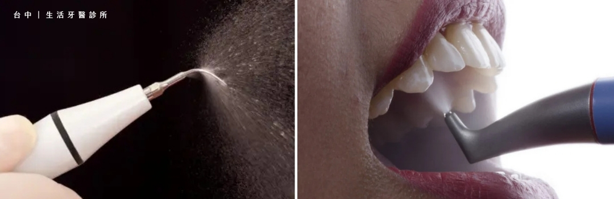
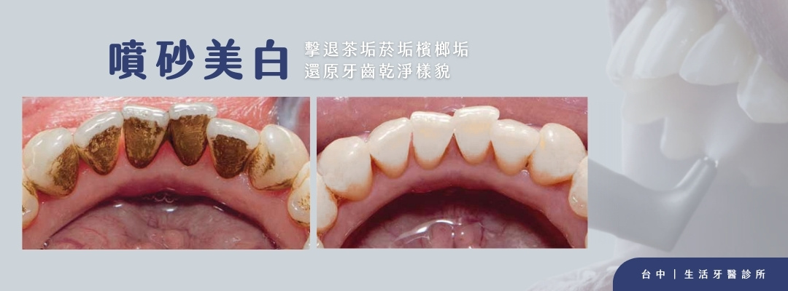

「為什麼洗完牙，牙齒還是黑黑的？」這是許多人洗牙後的疑問。洗牙主要以超音波震動清除牙結石，幫助維護牙周健康、預防牙周病；若牙齒表面留下的是茶垢、咖啡垢或菸垢，通常還需要進一步的表面清潔。
噴砂美白能針對附著在牙齒表面細小孔隙與齒縫中的外源性色素，協助恢復牙齒原有的潔淨色澤。
1. 洗牙為什麼洗不掉色素？
洗牙的主要任務是去除堅硬的牙結石，而喝茶、抽菸、喝咖啡或嚼檳榔形成的色素，屬於附著在牙齒表面的外源性色素。這些沉積常藏在細微孔隙、凹槽與牙縫中，單靠洗牙器械不一定能完整清除。
簡單區分
洗牙著重清除牙結石、維護牙周健康；噴砂美白則著重清除牙齒表面的色素沉積。兩者用途不同，可由醫師依口腔狀況評估搭配。
2. 什麼是噴砂美白？
噴砂美白是一種物理性清潔方式，利用細緻粉末（例如碳酸氫鈉）配合高壓水柱，深入一般器械較難觸及的牙面凹陷與牙縫，溫和帶走頑固的外源性色素。
它不會改變牙齒內在的原生顏色，而是清除覆蓋在表面的沉積物，讓牙齒回復原本較乾淨、明亮的樣貌。

3. 噴砂美白的 4 大優勢
01
不傷害齒質
以物理方式移除表面色素，在專業操作下不會磨損琺瑯質。
02
低敏感度
治療時主要感受為水霧與粉末，牙齒敏感或較怕看牙者通常也容易接受。
03
恢復自然齒色
清除茶垢、咖啡垢、菸垢等沉積，讓牙齒回到原本潔淨的色澤。
04
效果立即可見
完成清潔後即可看見表面色素減少，療程快速且不需等待。
4. 誰適合噴砂美白？

01
常喝咖啡或茶
牙齒表面容易累積咖啡垢、茶垢，希望加強日常潔牙效果。
02
有菸垢或檳榔垢
長期抽菸或嚼檳榔，牙齒表面已有較明顯的外源性色素沉積。
03
想快速改善外觀
不希望接受化學性美白，只想清除表面污垢、恢復自然潔淨齒色。
醫師提醒
噴砂美白無法改變牙齒本身的內在顏色，實際效果會因色素種類、沉積程度與口腔狀況而異。療程前應由牙醫師檢查評估。